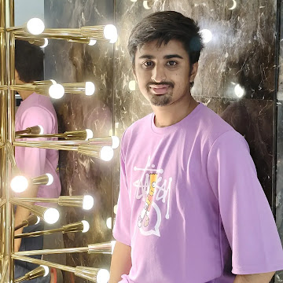

🌟 About Me 🌟
👋 Hi there! I’m Harshadeep, an aspiring technology enthusiast
currently pursuing a Master of Computer Applications (MCA).
With a strong foundation in Java 🖥️—shaped by the guidance of an
exceptional trainer—I have honed my skills in core programming
concepts and beyond.
📜 Certifications:
✔️ HackerRank Certified Java Basics
✔️ Wipro TalentNext Program
✔️ Fullstack Web Development Intern from TAP Academy
💡 My journey is deeply inspired by my humble background, where
my father works diligently as a watchman and my mother is a devoted homemaker.
Their dedication fuels my drive to excel and bring pride to my family.
🚀 What I Bring to the Table:
🔧 Strong technical skills
🔍 A problem-solving mindset
🌱 A passion for continuous learning and innovation
🌐 I am excited to connect with like-minded professionals
who share my enthusiasm for technology and growth. Let’s work together
to make a meaningful impact in the tech world!